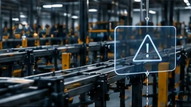

Manufacturing Systems · Digital
Smart MIFC
Exploring how Material and Information Flow Charts (MIFC) might evolve to represent digital information, decision points, and timing in modern manufacturing systems.
Projects
A collection of personal projects exploring manufacturing systems, digital manufacturing, and the connection between people, processes, and technology. From early concepts to evolving prototypes and lessons learned.
Selected explorations
Read the summary for each project. Demos and deeper documentation will be linked as they become available.
Manufacturing Systems · Digital
Exploring how Material and Information Flow Charts (MIFC) might evolve to represent digital information, decision points, and timing in modern manufacturing systems.

Problem Solving · TPS
A research prototype that connects visible manufacturing abnormalities to ownership, containment, investigation, countermeasures, and verification—moving beyond detection toward learning and resolution.
Data & Analytics · Digital
An early exploration of how shop-floor data, analytics, and human judgment can work together so manufacturing signals inform meaningful operational decisions.
I'm open to thoughtful discussions, feedback, and opportunities to learn from others.